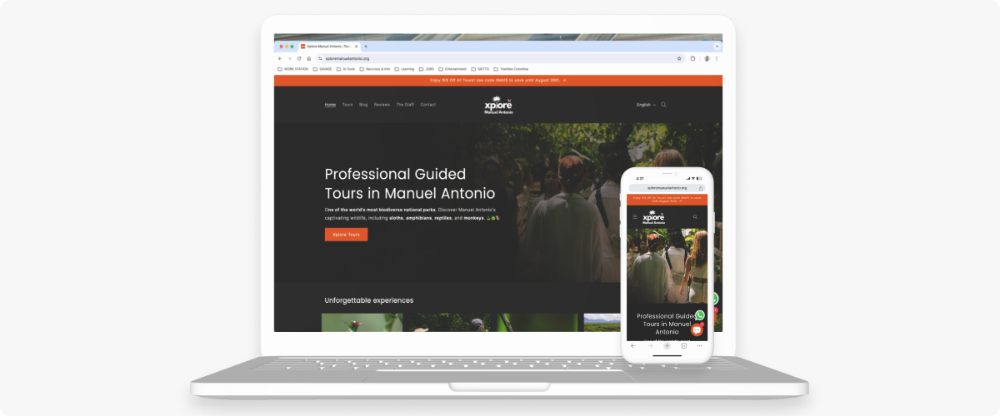
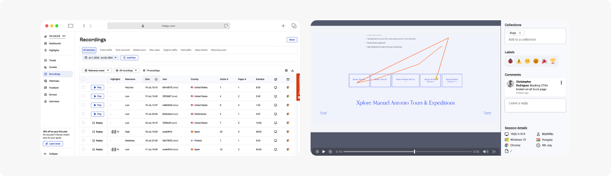
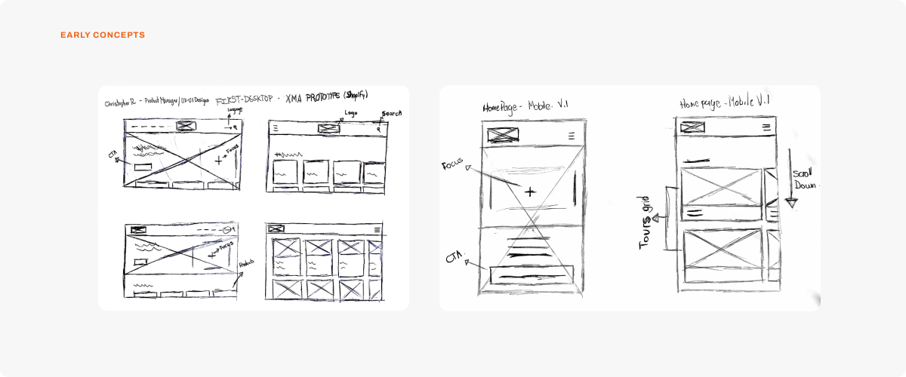
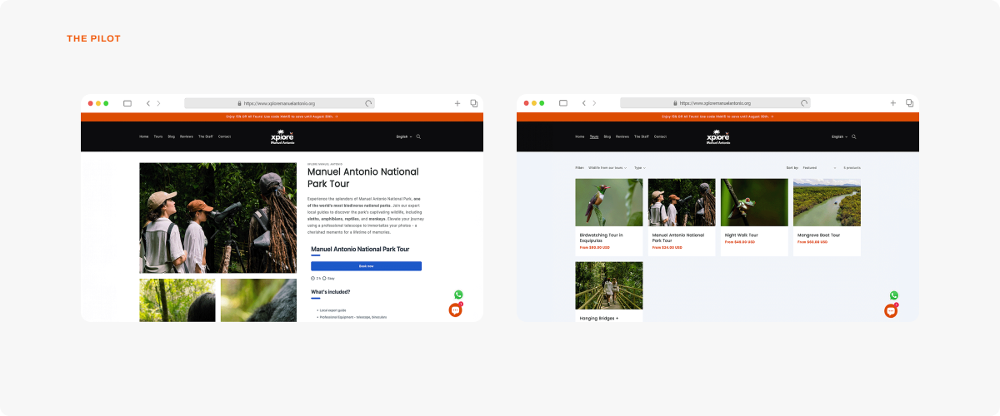
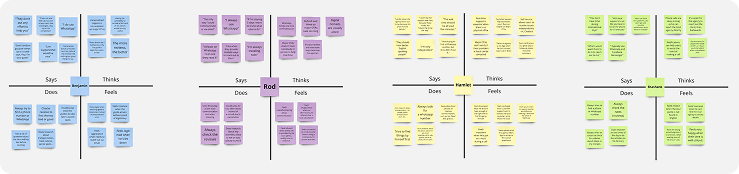
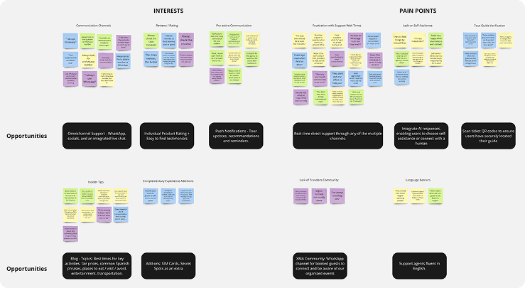
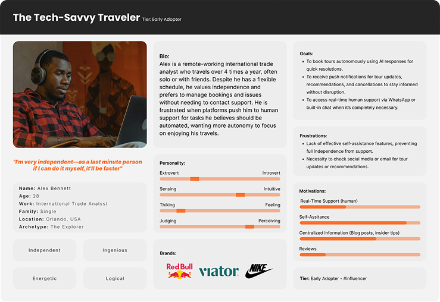
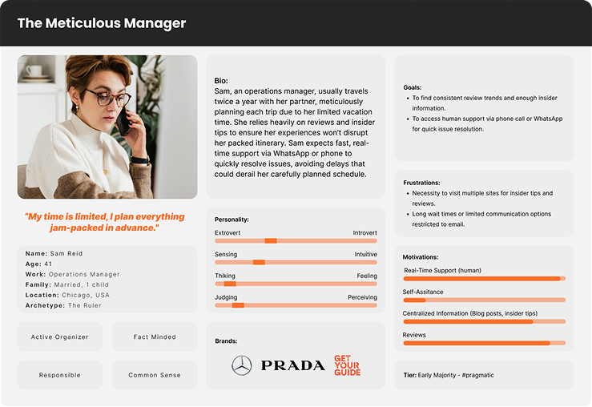

XMA
Tour booking platform
Manuel Antonio's first tour-booking platform — giving travelers the local support the major OTAs can't, and cutting fees from 30% to 5%.
context
local tours, global storefront — and 30% gone with every sale
Xplore Manuel Antonio is a naturalist tour agency that started as a one-man operation with the vision to become the first tour booking platform in Manuel Antonio, Costa Rica.
XMA's founder identified there was a lack of local expert support for travelers who booked a tour through a major OTA — GetYourGuide, Viator — and that no local platform existed to provide it either.
With no platform of its own, XMA — like every other local guide and agency in Manuel Antonio — depended entirely on the major OTAs to sell online, paying a 30% fee on every booking.

the problem
two symptoms, one cause
The problem had two sides — one facing travelers, one facing the business — and they fed each other.
travelers struggle with lack of local expert support — the major OTAs sell reach, not local presence. When something goes wrong they have no answer — and for travelers trying to find a local alternative, poorly designed websites push them back to the OTAs they were trying to avoid.
the business faced a significant profit impact — its self-made website was part of the problem, converting zero bookings due to critical functionality issues. That only reinforced its dependency on the OTAs, whose fees ran as high as 30% per booking.
the challenge
live today, final tomorrow
The business had a hard requirement: a functional website, live and converting, while research for the final design was still underway. Its existing site was losing bookings by the day, so deferring launch until the research concluded was never an option.
"How do I get a converting site live now — while I run the research for the final design?"
the approach
evidence first, assumptions never
watch the behavior — before designing anything, I audited the interface and watched real sessions on the existing site to see exactly what was pushing travelers away.
ship the pilot — those findings let me launch a functional, converting site fast — meeting the business's requirement and proving a direct channel could work.
listen to travelers — with the site live and converting, I ran the full design-thinking loop — empathize, define, ideate — to design the final version on evidence, not guesswork.
discover
ten sessions told me what a survey never would
I ran a Hotjar watch party across ten high-relevance session recordings, chosen to pinpoint what was quietly killing functionality and conversion on the client's self-made site.
findings
- Excessive text, poor use of space, and almost no imagery — users scrolled, and left.
- Malfunctioning booking CTAs — the one action the site existed for, failing.
- A broken reviews widget — removed the social proof travelers lean on to decide.
design decisions
- Redesign the UI around e-commerce principles — trade dense text for appealing imagery and a clean hierarchy, so a tour sells at a glance instead of burying travelers in copy.
- Integrate a booking system — make the core action work end to end for a smaller fee.
- Dedicated Reviews page — travelers can find the social proof the broken widget was hiding.

the pilot
go live, prove the concept
The goal was narrow and deliberate — not to ship the final product, but to prove a direct channel could work at all. In its first month, the pilot delivered measurable proof:
Conversion from 0% to 4%
Booking fees cut from 30% to 5%


design thinking
interviews
I interviewed 4 frequent travelers and tour-takers to understand their needs, frustrations and behaviors when local support is needed - Hotjar.
empathy maps

data synthesis

user personas


feature ideation (HMW)
I reframed each pain point as a How Might We, then mapped the answers to features:
- HMW let travelers resolve most needs themselves, with a human one tap away?
Proactive AI chat with an on-demand human fallback; omni-channel support. - HMW surface trustworthy social proof at the moment of decision?
Reviews on tour cards; testimonials. - HMW keep travelers informed before they have to ask?
Push notifications for updates, confirmations, and reminders. - HMW make a traveler certain they've found the right guide, on the ground?
Scan-ticket QR codes. - HMW give travelers the local insider tips they'd get from a friend in Manuel Antonio?
Convenience-focused blog content
next steps
from a validated direction to a system
The research delivered a direction with evidence behind every part of it. The path forward:
prototype — the full experience against the personas and journey maps.
ship — the final product.
validate — with real users.
reflection
adapt the process — don't abandon it
The real lesson here wasn't about method — it was about priorities. A textbook design process rarely survives a client's reality: XMA needed a live, converting pilot site, and the business couldn't wait for a full research cycle to finish.
So I adapted instead of abandoning. I prioritized the client's most urgent need — a working pilot — without sacrificing the rigor the final product deserved. The process wasn't cut; it was resequenced around the business. Knowing what to ship now and what to research first is the part of the work no framework hands you.